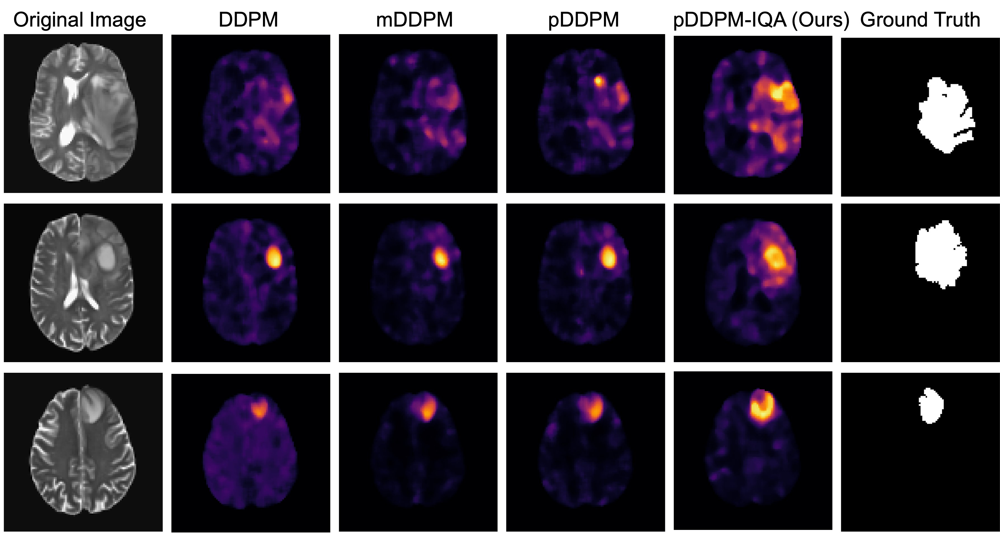

Abstract
Anomaly detection in brain MRI is crucial for identifying abnormalities such as tumors. Reconstruction-based methods, particularly those utilizing autoencoders, have been prevalent in this area. While much of the existing work has focused on meticulously designing models and algorithms, we revisit the problem of reconstruction-based anomaly detection in brain MRI from an image quality assessment perspective—an underexplored aspect in this field. We propose a fusion quality loss function that combines Structural Similarity Index Measure loss with ℓ1 loss, offering a more comprehensive evaluation of reconstruction quality. Additionally, we introduce a dataset pre-processing strategy that enhances the average intensity ratio between normal and abnormal regions, improving the distinction of anomalies. Our method achieves state-of-the-art performance on the BraTS21 (T2, FLAIR) and MSULB datasets, demonstrating significant improvements (>10%) in both Dice coefficient (DICE) and Area Under the Precision-Recall Curve (AUPRC) compared to existing methods. This work highlights the importance of comprehensive image quality assessment in medical anomaly detection and provides a new perspective for future research in this field.

Results
| Method | BraTS21 (T2) | MSLUB (T2) | ||
|---|---|---|---|---|
| DICE [%] | AUPRC [%] | DICE [%] | AUPRC [%] | |
| Thresh [1] | 19.69 | 20.27 | 6.21 | 4.23 |
| AE [2] | 32.87±1.25 | 31.07±1.75 | 7.10±0.68 | 5.58±0.26 |
| VAE [2] | 31.11±1.50 | 28.80±1.92 | 6.89±0.09 | 5.00±0.40 |
| SVAE [3] | 33.32±0.14 | 33.14±0.20 | 5.76±0.44 | 5.04±0.13 |
| DAE [4] | 37.05±1.42 | 44.99±1.72 | 3.56±0.91 | 5.35±0.45 |
| f-AnoGAN [5] | 24.16±2.94 | 22.05±3.05 | 4.18±1.18 | 4.01±0.90 |
| DDPM [6] | 40.67±1.21 | 49.78±1.02 | 6.42±1.60 | 7.44±0.52 |
| mDDPM [7] | 51.31±0.66 | 57.09±0.94 | 8.08±0.70 | 9.06±0.62 |
| pDDPM [8] | 49.41±0.66 | 54.76±0.83 | 10.65±1.05 | 10.37±0.51 |
| pDDPM-IQA (ours) | 59.45±0.37 | 62.99±0.37 | 12.93±0.67 | 11.51±0.50 |

Qualitative visualization on the BraTS21 test set. Columns 2-5 show anomaly maps from different methods for three samples.
BibTeX
@misc{pan2024rethinkingmedicalanomalydetection,
title={Rethinking Medical Anomaly Detection in Brain MRI: An Image Quality Assessment Perspective},
author={Zixuan Pan and Jun Xia and Zheyu Yan and Guoyue Xu and Yawen Wu and Zhenge Jia and Jianxu Chen and Yiyu Shi},
year={2024},
eprint={2408.08228},
archivePrefix={arXiv},
primaryClass={eess.IV},
url={https://arxiv.org/abs/2408.08228},
}